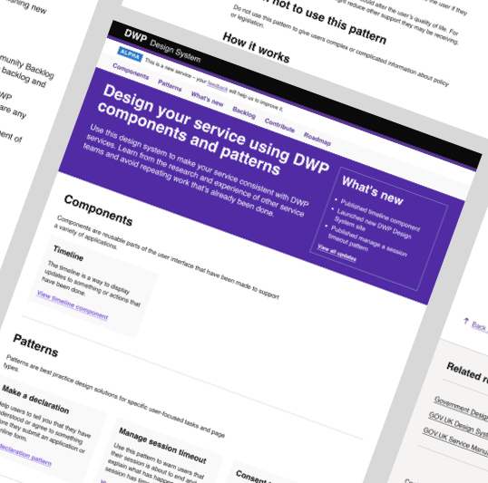
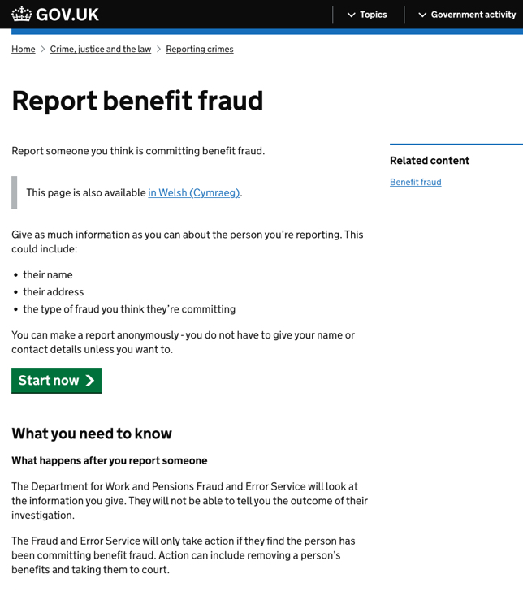
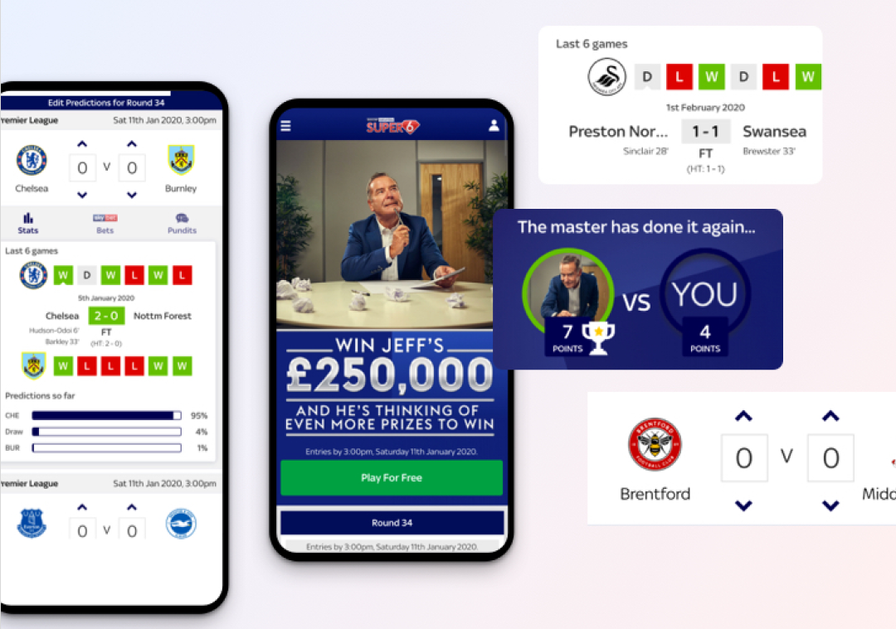
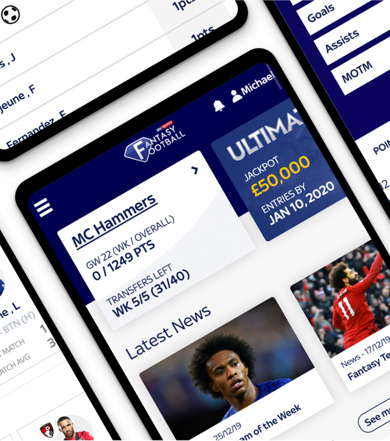
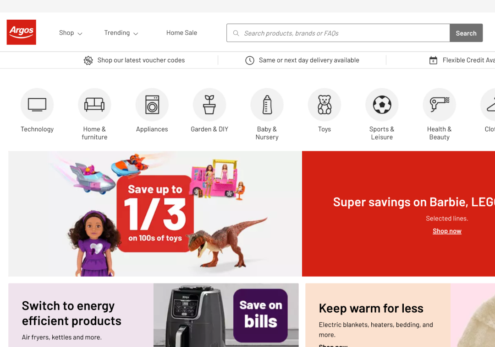

Take a look at my work
I have worked in various industries on several high-profile projects, including NHS, Department of Work and Pensions (DWP), Sky Bet, British Airways, Royal Mail, GOV.UK, Sky Sports, Man City, and Jet2.

DWP’s first design system- Working on the design system team, spending much of that time ensuring it was a community led service whilst being valuable.
#publicsector

Reporting benefit fraud — Working with the Government, building a service to allow users to report someone committing benefit fraud.
#publicsector

Sky Sports' Super 6 - designing Super 6 to ensure consistency and increase retention on the country's most popular app.
#appdesign

Creating an online brand and website for Bobbin and Bumble - I led the design and build of an e-commerce website and various marketing templates for my favourite brand Bobbin and Bumble.
#e-commerce

Rebranding Sky Sports' Fantasy Football app - I helped to create a leading digital mobile experience that was aimed at current and new users to Fantasy Football.
#appdesign

Updating the branding of Argos - working with Argos, we designed and built a new front-end for their ever popular website.
#e-commerce